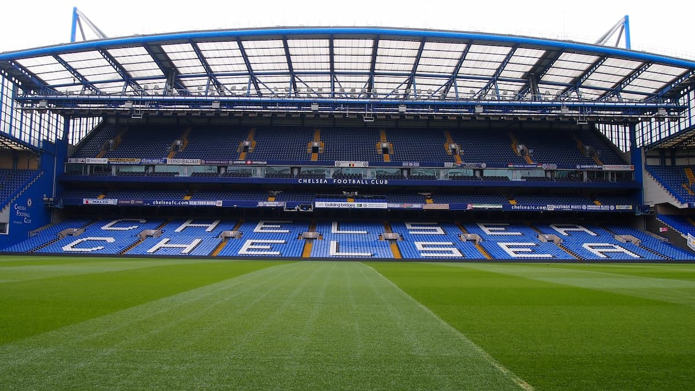
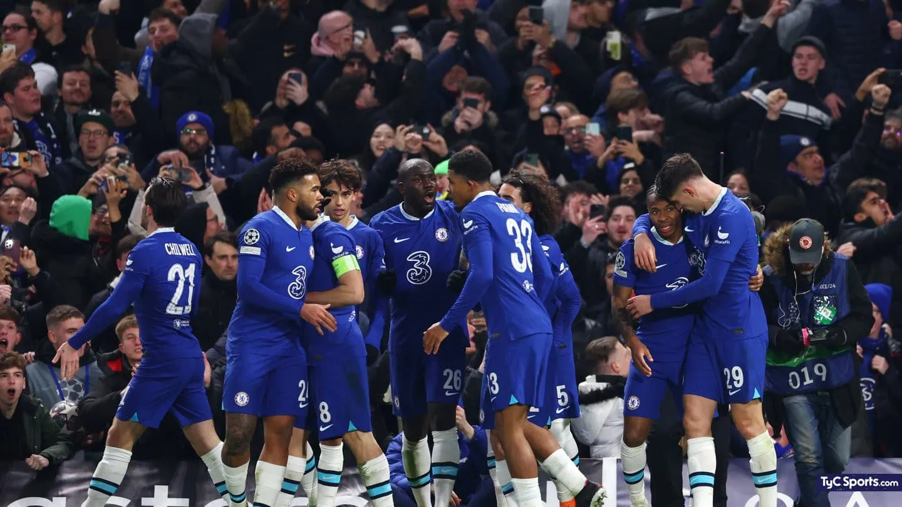

Cultura del fútbol en Inglaterra
Más que un deporte, es un estilo de vida.

Aficionados Apasionados
Los aficionados al fútbol inglés son conocidos por su pasión y lealtad. Los estadios siempre están llenos, y los seguidores cantan y animan a sus equipos.

Estadios Históricos
Inglaterra tiene algunos de los estadios más icónicos del mundo, creando una atmósfera inolvidable para cada partido.

Fútbol y Vida Diaria
El fútbol es parte de la vida cotidiana. Las personas ven los partidos en pubs, casas y lugares públicos, compartiendo la experiencia juntos.